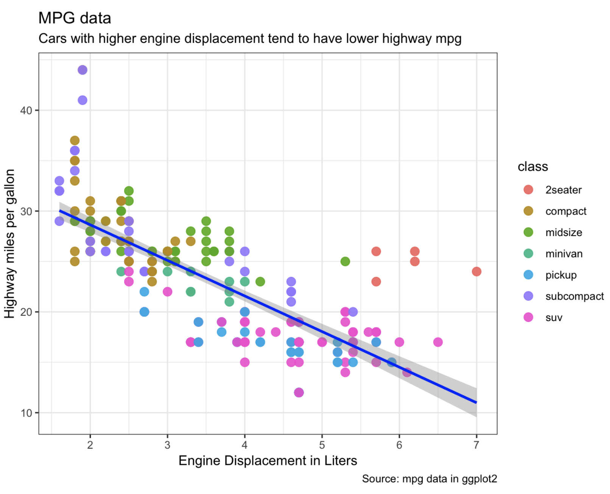
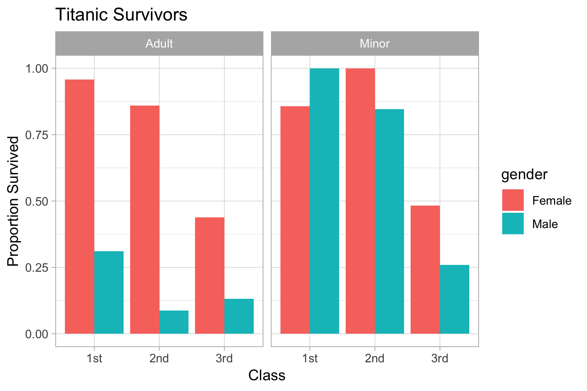
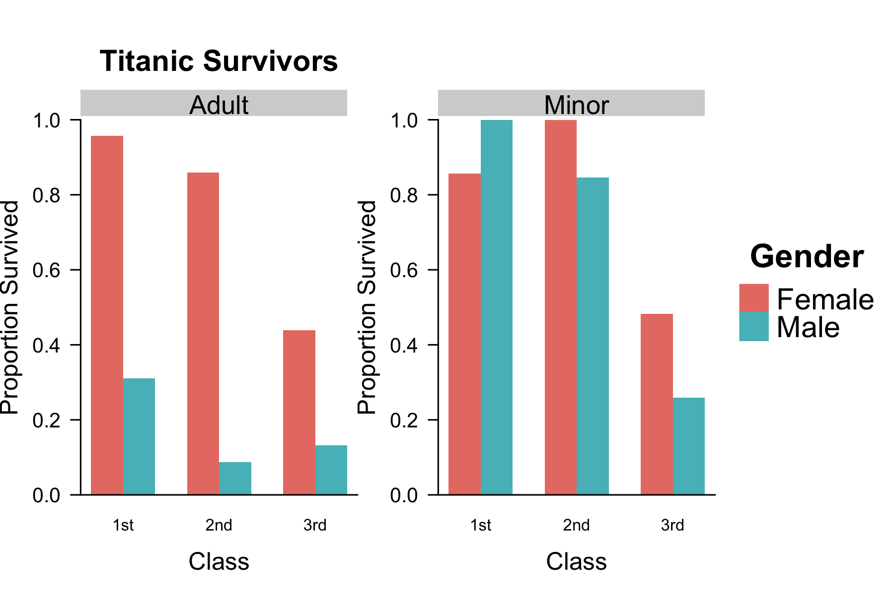
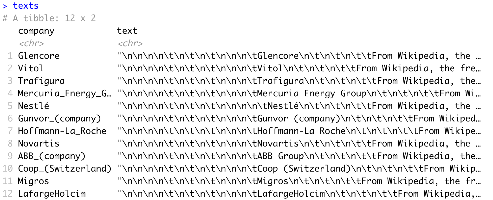
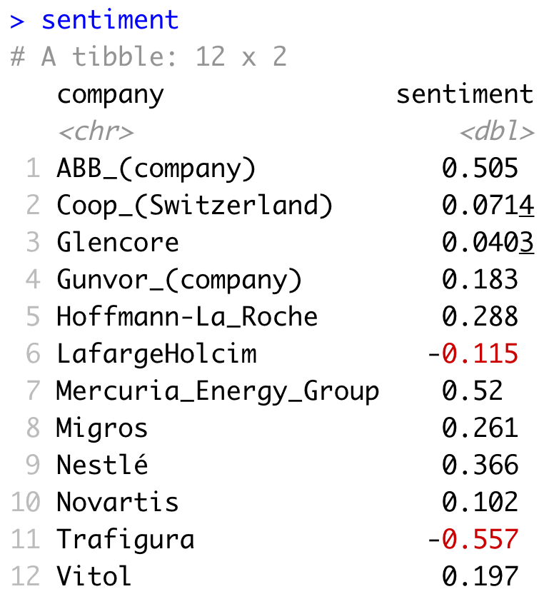

Cours à venir
Avec des applications dans tous les domaines professionels!
Équilibrant de courtes présentations interactives et des travaux pratiques plus longs, étape par étape, nos cours sont conçus pour répondre à votre niveau et à vos besoins spécifiques, que vous soyez un analyste de données débutant ou avancé. Il y aura plusieurs instructeurs pour s'assurer que personne ne se perd. N'hésitez pas à nous contacter si vous avez des questions et à explorer nos documents ouverts
-
R for Data Science
990CHF @ Uni Basel
-
Statistics with R
990CHF @ Uni Basel
-
Machine Learning with R
990CHF @ Uni Basel
Témoignages
"Many thanks for the excellent course, I really learnt a lot. The documents were super useful and the examples really interesting. In addition you guys were all awesome, super helpful, engaging and the atmosphere was really stimulating."
BRUNO, Head of Clinical Development
"A perfect course if you would like to get a good understanding about machine learning and how to apply it in R. The course covers the most important topics regarding machine learning and is very well organized. In the end you will be able to create meaningful machine learning models, to evaluate and to optimize them. The lecturers are enthusiastic about the topic and explained everything in an understandable way."
FREDERIK, Senior consultant
"You really deserve all compliments: for presentation, for teaching, for your help and last but not least and friendly attitude. The course was above my expectations! The material presented was hands-on and up-to-date!"
STEFAN, Senior Risk Modeller & Researcher
"I learned from the basics to really cool stuff like interactive plots. Right after the bootcamp I decided to move fully into R. Really great bootcamp!"
EDGAR, Associate Professor
"Every participant will have found something he or she could relate to, be it statistics, visualizations, presentations or web apps. It certainly made me want to take my computer and get cracking right away!"
JOHAN, Analyst
"Learning R at The R Bootcamp has offered me [...] the feeling of staying relevant in the changing finance industry"
IRENA, Credit Officer
Nos experts en R
Dr. Dirk Wulff
Founder & Lead instructor
I work as a researcher at the University of Basel, specialising in decision science and big data approaches to understanding human behavior.
Favorite R package
Rcpp to make R lightning fast.
My own R packages
cstab for clustering methods.
memnet for the analysis of memory networks.
mousetrap for analysing movement trajectories.
Dr. Michael Schulte-Mecklenbeck
Instructor @ Bern
I am a senior lecturer for methodology at the department of Business Administration, University of Bern. I specialise in tracing human decision processes through eye- and movement-tracking.
Favorite R package
tidyverse to make Data Science efficient.
My own R packages
mousetrap for analysing movement trajectories.
R for Data Science
Learn Data Science with R from the ground up
Aug 24/25 | RegisterNov 9/10 | Preregister
Learning objective
This course teaches you the basics of the R language and the Rstudio environment, how to load data from various external files types, including .csv, .excel, .sav, how to clean, organise, and explore data, how to conduct basic statistical analyses and, finally, how to create striking visualisations.
Prerequisites
There are no strict knowledge prerequisites for this course. Prior experience with a programming language (e.g.; R, Python, SAS), as well as an introductory course in statistics, is helpful but not necessary. Participants are requested to bring their own laptop with software installation rights.
Details
| Times | 2-day course: Sat-Sun, 9am-6pm |
| Location | Advanced Studies - University of Basel |
| Class | Max. 14 students |
| Price | 990CHF |
Schedule & Materials (Feb, 2019)
| Day 1 | Day 2 | |
|---|---|---|
| 0900 | Welcome | Recap |
| 0930 | Intro to R | Analysing + |
| 1200 | Lunch | Lunch |
| 1300 | Data + | Plotting + |
| 1530 | Wrangling + | Case studies: I, II |
| 1745 | Wrap-up | Apero |
Key packages
| tidyverse | A collection of cutting-edge Data Science packages prominently including readr, dplyr, and ggplot2. |
| readr | Convenient package for reading in text file formats such as .csv and .txt. |
| dplyr | R's go to data wrangling package for cleaning, organizing, and joining data sets. |
| ggplot2 | Arguably the best visualization package across all programming language, not just R. |
Statistics with R
Learn to make data-driven decisions with R
Sep 7/8 | RegisterLearning objective
This course teaches you the logic of common statistical procedures, how to implement various statistical analyses in R, including Regression, ANOVA, and robust tests, how to evaluate their assumptions, and how to interpret their results.
Prerequisites
There are no strict knowledge prerequisites for this course. Prior experience with a programming language (e.g.; R, Python, SAS), as well as an introductory course in statistics, is helpful but not necessary. Participants are requested to bring their own laptop with software installation rights.
Details
| Times | 2-day course: Sat-Sun, 9am-6pm |
| Location | Advanced Studies - University of Basel |
| Class | Max. 14 students |
| Price | 990CHF |
Schedule & Materials (Apr, 2019)
| Day 1 | Day 2 | |
|---|---|---|
| 0900 | Welcome | Recap |
| 0930 | Intro to R & R for Stats |
Hierarchical models + |
| 1200 | Lunch | Lunch |
| 1300 | Linear models I + | Robust statistics + |
| 1530 | Linear models II + | New statistics + |
| 1745 | Wrap-up | Apero |
Key packages
| stats | Containing |
| lme4 | Extends lm to implement hierarchical models. |
| boot | Multi-purpose tool to conduct robust bootstrapping analyses. |
| pwr | Conduct sample size calculation in R. |
Machine Learning with R
Learn to build predictive algorithms with R
Oct 5/6 | RegisterLearning objective
This course teaches you the basic principles of machine learning, how to use R to implement various machine learning algorithms, including Regression models, Decision Trees, and Random Forests, and how evaluate their performance for both regression and classification problems.
Prerequisites
There are no strict knowledge prerequisites for this course. Prior experience with a programming language (e.g.; R, Python, SAS), as well as an introductory course in statistics, is helpful but not necessary. Participants are requested to bring their own laptop with software installation rights.
Details
| Times | 2-day course: Sat-Sun, 9am-6pm |
| Location | Advanced Studies - University of Basel |
| Class | Max. 14 students |
| Price | 990CHF |
Schedule & Materials (May, 2019)
| Day 1 | Day 2 | |
|---|---|---|
| 0900 | Welcome | Recap |
| 0930 | What is ML? & R for ML |
Analysing + |
| 1200 | Lunch | Lunch |
| 1300 | Fitting + | Features + |
| 1530 | Prediction + | Case studies + |
| 1745 | Wrap-up | Apero |
Key packages
| caret | R's Swiss army knife for training and evaluating more than 200 machine learning algorithms. |
Why R?
5 reasons why you should learn R today.
1. R was designed for analytics
R was designed first and foremost as a language for analytics and statistics. For that reason, R makes it easy for you to run statistical analyses, may it be an A/B test or a complex machine learning algorithm, with minimal code. Thanks to modern packages such as dbplyr and RHadoop, R also enables you to use virtually the same code when analysing Gigabytes of data stored on databases as you would on a data from a small Excel spreadsheet.
2. R has an unrivaled set of free packages
As great as R’s core framework is, the language would not be nearly as popular as it is today if it weren’t for R’s unrivaled collection of (freely available!) packages. What is an R package? An R package is a collection of code designed to help you, the programmer, solve a particular task without having to program a solution yourself. It really is difficult to overstate comprehensiveness of the R package universe.
3. R enables you to make striking visualisations
As good as R is for statistics, it is as good, if not better, for data visualisation. Why? One word: ggplot2. The ggplot2 package makes it easy for anyone to create colorful, complex, striking visualisations with minimal code. For example, you can create the plot below with essentially only 5 lines of code.
4. R works great with other languages
There are cases where you may want to take advantage of the features of other languages, such as C++ for its blinding speed or SQL for querying relational databases. Thankfully, with packages such as Rcpp for C++ or dbplyr for SQL combined with the amazing RStudio integrated developer environment, you can easily supplement your R code with these and other languages.
5. R has a passionate, open community
Without question, one of the best things about R is its community of passionate users, developers and bloggers who will jump at the chance to show you all of the amazing things they are doing with R. With hundreds of bloggers sharing their code at r-bloggers.com or local meetup groups such as R-Ladies or Michael's Bern R Meetup, the opportunities to meet with and learn from other R users are really endless.
R for Data Science
using the amazing tidyverse
According to many estimates, data scientists spend most time not on the implementation of sophisticated algorithms, but on the preceding steps: first, cleaning and organizing the data, and then mining and visualizing their important trends. There are many tools to carry out these steps, but there is no better in R or any other language than the amazing tidyverse.
What is the tidyverse?
The tidyverse is a meta-package that combines several individual R packages - packages are free and openly available collections of functions - each geared towards an elementary Data Science task. For example, the readr package allows you to read in data files from your hard-drive, the dplyr package efficiently handles all cleaning, organization, and joining of data sets, and the ggplot2 package makes creating striking, publication-ready visualizations a piece-of cake.
The tidyverse is more
The tidyverse is also a new framework of working in R. The tidyverse comes with a novel, improved coding style centering on modular programming using the pipe operator
Tidyverse vs. classic R
For these and other reasons, we focus our bootcamp on R for Data Science predominantly on the tidyverse rather than the classic functionality within R. Not convinced about the beauty of the tidyverse? Check out the example below comparing the same analysis in tidyverse and more basic R style or join our course on R for Data Science.
Tidyverse
# 1. Load tidyverse & data library(tidyverse) # makes all tidyverse packages available titanic <- read_csv("https://osf.io/aupb4/download") # load data # 2. data transformation and aggregation using dplyr titanic <- titanic %>% mutate(sex = case_when(Sex == "male" ~ "Male", TRUE ~ "Female"), age = case_when(Age >= 18 ~ "Adult", Age < 18 ~ "Minor"), class = factor(PClass)) %>% drop_na() %>% rename(gender = sex) %>% group_by(class, gender, age) %>% summarise(survival = mean(Survived)) # 3. plot using ggplot2 ggplot(titanic, aes(class, survival, fill = gender)) + geom_bar(stat = "identity", position = position_dodge()) + labs(x = "Class", y = "Proportion Survived", title = "Titanic Survivors") + facet_wrap(~ age) + theme_light()
Classic R
# 1. Load data titanic <- read.csv("https://osf.io/aupb4/download") # load data # 2. data transformation and aggregation using base R titanic$gender = titanic$Sex titanic$gender[titanic$gender == "male"] <- "Male" titanic$gender[titanic$gender == "female"] <- "Female" titanic$age <- ifelse(titanic$Age >= 18, "Adult", "Minor") titanic$class <- factor(titanic$PClass) titanic <- aggregate(titanic$Survived, list(class = titanic$class, gender = titanic$gender, age = titanic$age), mean) names(titanic)[4] <- "survival" # 3. plot using base R layout(matrix(c(1,2,3), nrow = 1), width = c(.4,.4,.2)) par(mar <- c(5.1, 4.1, 6.1,0)) cols <- c(rgb(232, 125, 114, maxColorValue = 255), rgb(84, 188, 194, maxColorValue = 255)) barplot(survival ~ gender + class, data = subset(titanic, age == "Adult"), beside = TRUE, ylim = c(0, 1), ylab = "Proportion Survived", xlab = "Class", main = "Titanic Survivors", las = 1, cex.lab = 1.5, cex.axis = 1.25, cex.main = 1.8, col = cols, border = NA) axis(side = 1, at = c(-1, 12)) rect(0.68, 1.01, 9, 1.08, col = "lightgrey", border = NA, xpd = TRUE) text(5, 1.04, "Adult", xpd = TRUE, cex = 1.6) barplot(survival ~ gender + class, data = subset(titanic, age == "Child"), beside = TRUE, ylim = c(0, 1), ylab = "Proportion Survived", xlab = "Class", las = 1, cex.lab = 1.5, cex.axis = 1.25, col = cols, border = NA) axis(side = 1, at = c(-1, 12)) rect(0.68, 1.01, 9, 1.08, col = "lightgrey", border = NA, xpd = TRUE) text(5, 1.04, "Minor", xpd = TRUE, cex = 1.6) plot.new() plot.window(xlim = c(0, 1), ylim = c(0, 1)) par(mar = c(0, 0, 0, 0)) points(c(-.5, -.5), c(.525, .445), pch = 15, col = cols, cex = 4, xpd = TRUE) text(c(-.25, -.25), c(.525, .445), labels = c("Female", "Male"),offset = 0, cex = 1.8, adj = 0) text(-.55, .65, "Gender", cex = 2, font = 2, adj = 0, offset = 0)
Sentiment
Analyse sentiment using tidytext
Sentiment analysis is a powerful tool with diverse areas of application that allows one to assess the affective content of pieces of text. For example, say you are interested in the impact of a novel compaign targeted at improving your companies image. One way to track the success of your compaign would be to analyze the sentiment that customers express on social media posts or product reviews.
R is great for natural language processing
Turns out that R has a number of tidyverse-related packages that make carrying out such analyses surprisingly easy. The packages xml2 and rvest help you pull any kind of information from the internet and, once text is imported into R, the tidytext package allows you to very efficiently perform many natural langugage processing tasks including sentiment analysis.
Sentiment of Swiss companies
The example below illustrates the ease of conducting sentiment analysis of text available online. The analysis first downloads the English Wikipedia pages of the twelve highest-grossing Swiss companies. Then, in just five lines, the code computes the average sentiment of each company based on the words available in the respective articles.
# 0. load packages require(tidyverse) require(xml2) require(rvest) require(tidytext) # 1. get website urls companies <- c( "Glencore", "Vitol", "Trafigura", "Mercuria_Energy_Group", "Nestlé", "Gunvor_(company)", "Hoffmann-La_Roche", "Novartis", "ABB_(company)", "Coop_(Switzerland)", "Migros", "LafargeHolcim") urls <- paste0("https://en.wikipedia.org/wiki/", companies) # 2. read Wikipedia articles texts <- map(urls, function(x){ x %>% read_html() %>% html_node("body") %>% html_text()}) texts<- tibble(company = companies, text = unlist(texts))

# 3. get sentiments using tidytext sentiment <- texts %>% unnest_tokens(word, text) %>% inner_join(get_sentiments("afinn")) %>% group_by(company) %>% summarize(sentiment = mean(score))

Dynamic Reports
created easily using tidytext
The critical, final stage of any analysis is communication. In one way or another, the collected insights must find their way into a document or presentation, may for it be a periodical report or a research project. This achieved by transferring the numerical results and figures into another software used for creating the report by hand. Clearly, however, this is unnecessarily tedious, inflexible, and prone to errors. That is, if you knew R Markdown.
What is R Markdown?
R Markdown is an extension to Markdown, a lightweight markup language (https://en.wikipedia.org/wiki/Markdown). R Markdown provides you with a very simple syntax for creating and formatting documents that allows you to combine your R analysis code, the output that it produces, and plain text surrounding analysis. This means that when using R Markdown there is no more copy and pasting, everything is in one place.
Creating dynamic reports with R Markdown
Using R Markdown has loads of advantages. The most important one is that your documents become reproducible and dynamic. When you have everything in one place, making changes to the analysis or using a different set of data becomes entirely hassle-free. All you need to do is to make these changes and then re-”knit” the document, which will automatically re-create your document with all changes incorporated. Another benefit is that you can be sure your document reflects with 100% accuracy the results of your analysis. Typos in any of the important numbers? Not possible.
R Markdown is amazingly versatile
We rely heavily on R Markdown to create the diverse materials for our Bootcamps. All slides used for our presentations are entirely created using R Markdown, and so are documents that guide through the coding exercises. Both elements we produce as .html files so that our materials can be made accessible online. See, for instance, our slides on What is Machine Learning? or our exercise on Data Wrangling (includes solutions). However, you can use R Markdown to generate many different types of formats including nicely formatted PDF or Word documents.
Want to learn more about R Markdown, and reporting using R in general? Check out the freely available book R Markdown - The Definitive Guide, or join our course on Reporting with R, which we hope offer in the near future.
Matériaux passés
En suivant la philosophie de R de rendre la documentation ouverte à tous, nous rendons les matériaux des formations disponibles publiquement. Ci-dessous les liens pour nos cours passées.
R for Data Science
Learn Data Science with R from the ground up
February 2019 | 2-dayOctober 2018 | 2-day
July 2018 | 4-day
April 2018 | 4-day
Statistics with R
Learn to make data-driven decisions with R
April 2019 | 2-dayMachine Learning with R
Learn to build predictive algorithms with R
October 2019 | 2-dayMay 2019 | 2-day
January 2019 | 2-day
Terms of Use
13 June 2019
Agreement to terms
You agree that by accessing the Site. you have read, understood, and agreed to be bound by all of these Terms of Use. Supplementary terms and conditions or documents that may be posted on the Site from time to time are hereby expressly incorporated herein by reference. You will be deemed to have been made aware of and have accepted the changes in any revised Terms of Use by your continued use of the Site.
License
Unless otherwise indicated, the Site and its contents are licensed under the Creative Commons Attribution 4.0 licensing terms. If you are interested in using content on this size, please take a moment to read the full Creative Commons Attribution 4.0 licensing terms.


Third-party content
The site may contain links to other websites and conent belonging to third parties. Such websites and content are not investigated by us and we are not responsible for any third-party websites or content accessed through the Site.
Term and termination
These Terms of Use shall remain in full force and effect while you use the Site.
Modifications
We reserve the right to change, modify, or remove the contents of the Site at any time or for any reason at our sole discretion without notice. However, we have no obligation to update any information on our Site. We also reserve the right to modify or discontinue all or part of the Site without notice at any time.
Contact us
In order to resolve complaint regarding the Site or to receive further information regarding use of the site, please contuct us at:
The R Bootcamp
Faculty of Psychology
Missionstrasse 64A
CH-4055 Basel
Mail
Privacy
13 June 2019
This page informs you of our policies regarding the collection, use and disclosure of Personal Information we receive from users of the Site. We use your Personal Information only for providing and improving the Site. By using the Site, you agree to the collection and use of information in accordance with this policy.
Information collection and use
While using our Site, we may ask you to provide us with certain personally identifiable information that can be used to contact or identify you. Personally identifiable information may include, but is not limited to your name.
Log data
Like many site operators, we collect information that your browser sends whenever you visit our Site. This Log Data may include information such as your computer's Internet Protocol address, browser type, browser version, the pages of our Site that you visit, the time and date of your visit, the time spent on those pages and other statistics. In addition, we may use third party services such as Google Analytics that collect, monitor and analyze this data.
Communications
We may use your Personal Information to contact you with newsletters, marketing or promotional materials and other information pertaining to our training and consultinig services.
Cookies
Cookies are files with small amount of data, which may include an anonymous unique identifier. Cookies are sent to your browser from a web site and stored on your computer's hard drive. Like many sites, we use "cookies" to collect information. You can instruct your browser to refuse all cookies or to indicate when a cookie is being sent. However, if you do not accept cookies, you may not be able to use some portions of our Site.
Securities
The security of your Personal Information is important to us, but remember that no method of transmission over the Internet, or method of electronic storage, is 100% secure. While we strive to use commercially acceptable means to protect your Personal Information, we cannot guarantee its absolute security.
Changes to this privacy policy
This Privacy Policy is effective and will remain in effect except with respect to any changes in its provisions in the future, which will be in effect immediately after being posted on this page. We reserve the right to update or change our Privacy Policy at any time and you should check this Privacy Policy periodically. Your continued use of the Service after we post any modifications to the Privacy Policy on this page will constitute your acknowledgment of the modifications and your consent to abide and be bound by the modified Privacy Policy.
Contact us
In order to resolve complaint regarding the Site or to receive further information regarding use of the site, please contact us at:
The R Bootcamp
Faculty of Psychology
Missionstrasse 64A
CH-4055 Basel
Mail